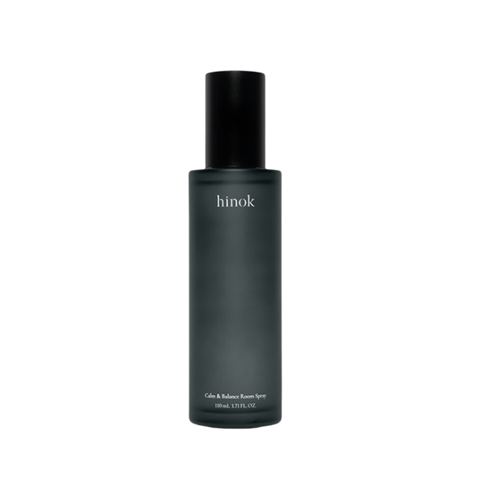
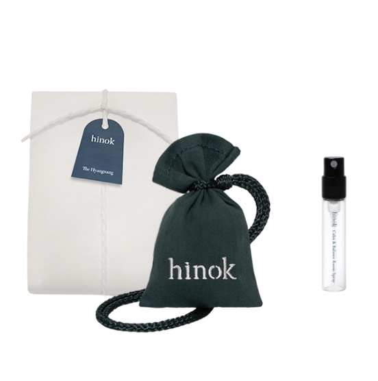

희녹은 편백을 기반으로 자연의 감각을 일상에 전하는 브랜드입니다.
향, 원료, 사용 방식에 대한 섬세한 접근을 통해 자연과 사람의 건강한 관계를 고민합니다.


위 제품들을 활용하여 전시장 안에 은은한 편백 향을 조성하였습니다.
희녹의 여정은 건강한 라이프가 지속될 수 있도록, 믿을 수 있는 자연 원료를 찾는 것에서 출발하며
그 답을 유네스코 지정 세계자연유산인 ‘제주’에서 찾았습니다.
제주는 화산 분출 활동으로 형성된 섬으로, 통기성과 투수성이 뛰어난 화산회토와
천연 암반이 걸러낸 깨끗한 지하수가 흐르는 청정한 자연환경을 지니고 있습니다.
이처럼 천혜의 환경이 숨 쉬는 제주에서 자란 편백나무를 전 제품의 핵심 원료로 사용합니다.
제주 한라산 아래 위치한 희녹의 자체 연구소를 중심으로
원료사, 제조사 등 전문 기관과 함께 핵심 원료인 ‘편백’을 체계적으로 연구하며,
계절에 따라 향과 효능이 달라질 수 있는
자연 원료의 고유한 특성을 전문적으로 관리하고 제품에 담아내고 있습니다.